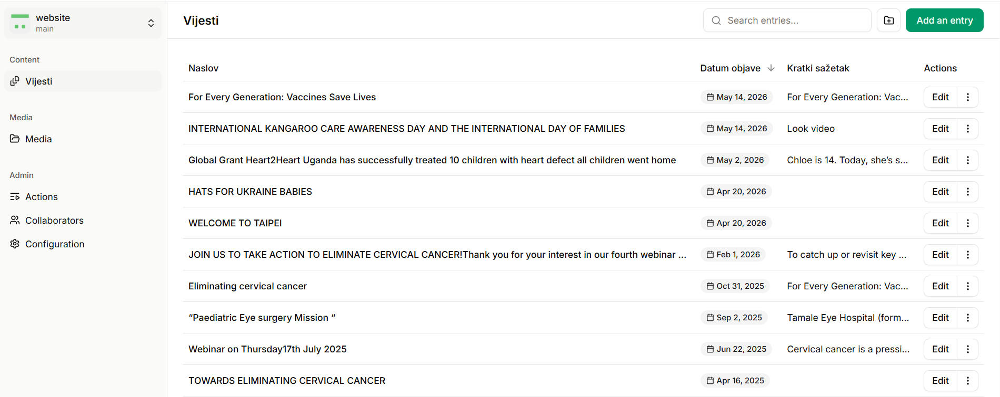
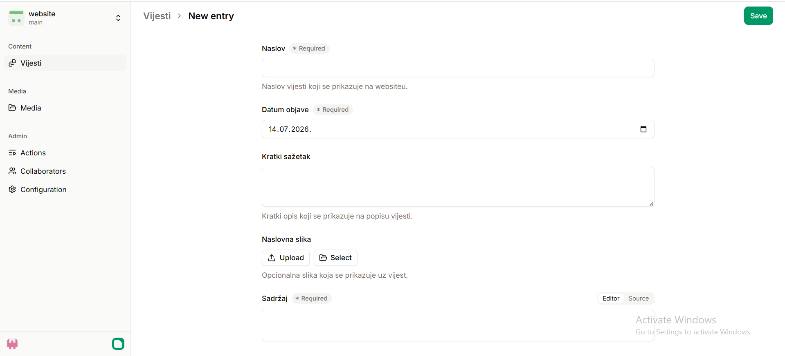
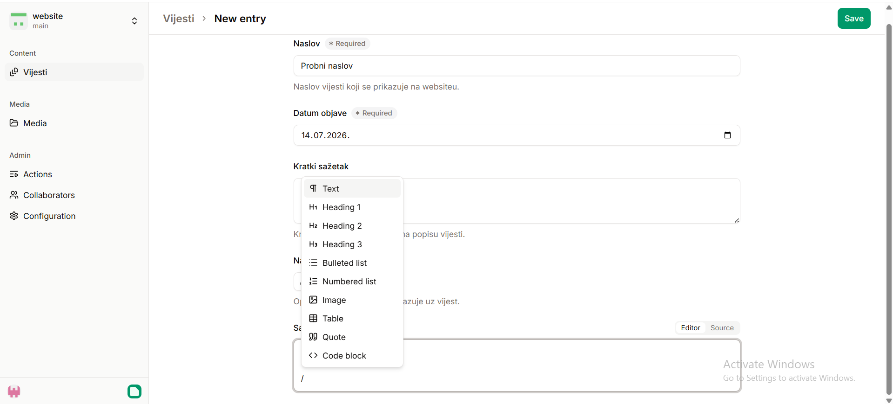
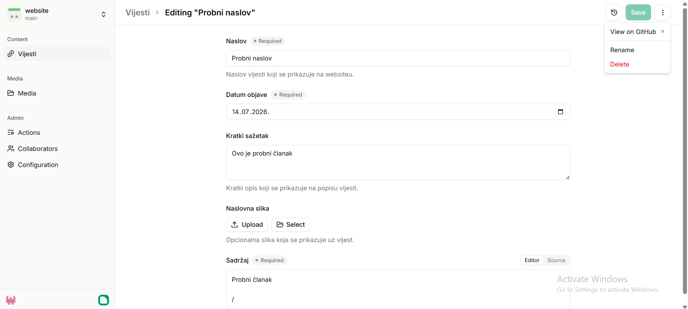

Ukratko
Prijava — ulazak u CMS
- Na adresu sajta dodaj
/admin(npr.rotaryhealthprofessionals.org/admin). - Prijavi se svojim GitHub računom.
- Odmah te ubaci u popis Vijesti — spreman za rad.

/admin je samo prečica koja te vodi u Pages CMS. Za pristup moraš biti dodan na repozitorij (to sređuje administrator).Dodavanje nove vijesti
- Gore desno klikni Add an entry.
- Ispuni polja:
- Naslov — naslov vijesti.
- Datum objave — datum.
- Kratki sažetak — 1–2 rečenice; prikazuje se na popisu vijesti.
- Naslovna slika (opcionalno) — Upload novu ili Select postojeću; prikazuje se na vrhu vijesti i na kartici u popisu.
- Sadržaj — glavni tekst vijesti.
- Klikni Save (gore desno).

Slika unutar teksta
U polju Sadržaj sliku ubaciš na jedan od tri načina:
- Upiši / (kosu crtu) pa iz izbornika odaberi Image → Upload ili Select.
- Povuci-i-pusti sliku s računala izravno u tekst.
- Zalijepi sliku s Ctrl+V.
Slika se automatski uploada u repozitorij i pojavi u tekstu — ništa se ne mora ručno raditi.

Dvije vrste slika: Naslovna slika (cover) je jedna po vijesti i stoji na vrhu; slike kroz / idu unutar teksta i može ih biti koliko god.
Uređivanje postojeće vijesti
- Na popisu vijesti klikni Edit pored željene vijesti.
- Promijeni što treba (tekst, sliku, datum…).
- Klikni Save.
Brisanje vijesti
- Pored vijesti klikni izbornik ⋮ (tri točkice) — ili otvori vijest.
- Odaberi Delete i potvrdi.

GitHub čuva povijest svih izmjena, pa se obrisana vijest po potrebi može vratiti — javi se administratoru.
Objava — kako vijest dođe na sajt
Kad klikneš Save, izmjena se sprema u repozitorij i sajt se sam ponovno izgradi za otprilike jednu minutu. Nakon toga osvježi stranicu sajta i provjeri kako vijest izgleda.
Ako se čini da promjena „ne dolazi", pričekaj minutu pa osvježi bez cachea: Ctrl+Shift+R.
Dobra praksa
- Naslov neka bude kratak i jasan; sažetak jedna do dvije rečenice.
- Prije uploada smanji velike fotografije — preporučena širina do 1600 px.
- Ne unosi lozinke, privatne podatke ni podatke o karticama.
- Nakon objave otvori sajt i provjeri vijest.
- Ako nešto ne radi, nemoj spremati mnogo puta zaredom — zabilježi naslov vijesti i poruku greške pa se javi administratoru.
Zadnja izmjena: 2026-07-14